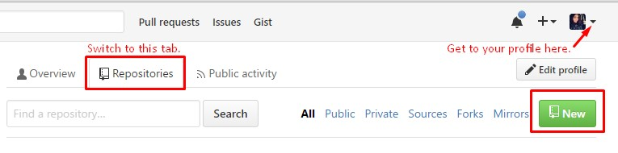

Step By Step
Begin by navigating to our tutorial and following the steps under Let's Get
Started
to create a GitHub account and download Git Shell. Do not rush through this process and be sure to
read thoroughly.
Once you have completed these two tasks navigate to our DHClass-Hub repository. First read through the README.md file that displays at the bottom of the repo. This is a general welcome to the DHClass-Hub and details the basic workflow of using this repo.
Next, you should clone the DHClass-Hub to your local computer. Follow our
tutorial steps on cloning. Once you have the DHClass-Hub
cloned navigate to the repo on your local computer. Search through the directory and
find the folder called sandbox
. The sandbox directory is a space for you to
practice adding, committing, and pushing files to. Go ahead and add ANY file to the
sandbox by dragging a file into that directory or saving a file from <oXygen>
there. Notice others have added pictures, text files, and a variety of code files.
You can open any of these files, but try not to delete any files you have not
created yourself. In order for you to push that file we will need to add you as a
collaborator. This is the perfect moment to create and/or comment on a GitHub issue.
Navigate to the DHClass-Hub GitHub page. At the top of the page, under
ebeshero/DHClass-Hub
you will see a tab that says Issues
. In our
DHClass-Hub Issues Board notice there are open issues and closed issues.
Search through the open issues for an issue where others are asking to be added as a
collaborator using keywords like collaborator
or add to sandbox
in the
search bar. If there is such an issue already existing click on it to create a
comment. If there is not an existing issue click the New issue
button at the
top of the page.

As mentioned in our tutorial section GitHub as Social Media
, issues and their comments are written in
markdown language. GitHub offers a comprehensive guide to writing markdown that you should reference as you find the
necessity to create and comment on issues (especially when you want you to include
segments of code). For the purposes of this assignment though you will only need to
create an issue with the title Adding Hub Collaborators
and/or comment in
such an issue with your GitHub username (i.e. Dr.
Beshero-Bondar's username is ebeshero). Along with your
username, also type the @ symbol followed by Dr. Beshero-Bondar's
username this will notify her to add you. In future issue comments use the
@ and specify any GitHub user by their username and this will send
an email or push notification to the user leading them to your comment as well as
leave a link to their profile for the instances that you may be trying to designate
credit to them. Your issue comment for this assignment should resemble this:

We will be monitoring the issue board to add collaborators so that you can complete
your push to the Sandbox. If you have to wait a bit for us to add you, you can take some time to read our Welcome to the
Issues Board
issue and our Troubleshooting-Readme
(which explains how to use the Troubleshooting folder in our
DHClass-Hub).
At this point, if you have been notified that you were added as a collaborator, go ahead with the steps using Git Shell to add, commit, and push your sandbox file to the DHClass-Hub. If you are still waiting to be added continue with the rest of this assignment, and finish your sandbox push once you have been added.
Next, we want you to create your own repository. Later in this course you will be
creating a personal website; therefore, we are having you create a Git repo that
will correlate with the development of said site. To create a new repo go to your
GitHub profile, select the Repositories
tab, and click New
.

Give your repo a logical name (i.e. my_page), a brief description, and select
public
. During this course we ask you to keep this repo public so we can
view each other’s site development without everyone in the course having to be added
as a collaborator; however, you can switch this to private in the future. Now that
you have created the repo on GitHub you need to clone it to your local computer (just like you
cloned the DHClass-Hub above). After you have the repo cloned you can make some
edits to your README.md file using markdown and/or add more files. Feel free to
reference my GitHub repo used for the development of my personal website. If for
some reason you have not been added to the DHClass-Hub, to push your sandbox file,
by the time this assignment is due make sure you practice adding, committing, and
pushing a file using your personal page repo.
Your final task is to navigate on GitHub to your personal page repo, and follow our tutorial steps to add a collaborator. Add your instructor(s) to your repo. After the completion of this course you can remove any unwanted collaborators; however, for this assignment we want you to practice adding at least one collaborator. Also when creating your own repo you may need to change the settings to include an issues board; follow these help.github.com directions to do so.